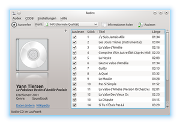

Audex
Dieser Artikel wurde für die folgenden Ubuntu-Versionen getestet:
Ubuntu 16.04 Xenial Xerus
Ubuntu 14.04 Trusty Tahr
Zum Verständnis dieses Artikels sind folgende Seiten hilfreich:
Audex  ist ein einfach zu bedienendes Programm zum Rippen von CDs für KDE4, das aber auch unter Unity oder GNOME genutzt werden kann (allerdings benötigt Audex einige KDE-Abhängigkeiten). Audex verwendet zum Auslesen die Bibliotheken von CD-Paranoia . Die Daten zu den CDs können via CDDB aus dem Internet bezogen werden.
ist ein einfach zu bedienendes Programm zum Rippen von CDs für KDE4, das aber auch unter Unity oder GNOME genutzt werden kann (allerdings benötigt Audex einige KDE-Abhängigkeiten). Audex verwendet zum Auslesen die Bibliotheken von CD-Paranoia . Die Daten zu den CDs können via CDDB aus dem Internet bezogen werden.
Nativ unterstützt es die Ausgabeformate MP3, MP4/AAC, OGG, WAV und FLAC (wenn die entsprechenden Encoder installiert sind). Es werden, wenn für das Format möglich, gleich ID3-Tags erstellt und eingebunden. Es kann aber zusätzlich mit allen Kodiern betrieben werden, die auf der Kommandozeile verwendbar sind, z.B. Musepack.
Es lassen sich eigene Profile erstellen und dezidierte Angaben zur Dateinamenserstellung, Speicherort, Erstellung von zusätzlichen Informationen, Einbindung von Covern oder Playlisten zu den CDs einfügen. Theoretisch sollte das Programm Cover aus dem Internet laden können, was momentan aber nicht zu funktionieren scheint. Die Dokumentation zum Programm ist leider eher spärlich...
Installation¶
Audex wird über die Pakete
audex (universe)
kde-config-cddb (optional, falls man Daten in eine CDDB exportieren möchte)
 mit apturl
mit apturl
Paketliste zum Kopieren:
sudo apt-get install audex kde-config-cddb
sudo aptitude install audex kde-config-cddb
installiert[1].
Zusätzlich werden die gewünschten Kodierer benötigt, z.B.
mit apturl
Paketliste zum Kopieren:
sudo apt-get install lame flac faac vorbis-tools mppenc
sudo aptitude install lame flac faac vorbis-tools mppenc
Wer MP3-Dateien erstellen möchte, sollte zusätzlich auch das Paket
eyed3
mit apturl
Paketliste zum Kopieren:
sudo apt-get install eyed3
sudo aptitude install eyed3
installieren, das seit Version 0.73 von Audex zum Erstellen der ID3-Tags verwendet wird, wenn es vorhanden ist. Lame scheint bei der Erstellung von ID3-Tags weiterhin Probleme mit einigen Unicode-Zeichen zu haben; die Verwendung von eyed3 löst diese Probleme.
Nach der Installation wird das Programm gestartet[2].
Konfiguration¶
Die Konfiguration erfolgt über den Reiter "Einstellungen", dort lassen sich "Kurzbefehle festlegen...", und die "Werkzeugleiste einrichten..." und den eigenen Bedürfnissen entsprechen anpassen. Werkzeugleiste und Statuszeile können auch ganz ausgeblendet werden.
Allgemeine Einstellungen¶
Im ersten Einstellungsreiter "Audex einrichten -> Allgemeine Einstellungen" werden die Vorgaben zur Dateierstellung, CDDB-Abfrage, Cover-Suche u.ä. gemacht. Außerdem kann die Sprache der zu verwendenden Wikipedia-Version angegeben werden, das CD-Laufwerk und CD-Paranoia-Optionen gewählt und der Pfad zur Ordner der gerippten Musikstücke festgelegt werden.
Profile¶
Im Reiter "Profile" kann man die erstellten Vorgaben verwalten. Unterstützt wird die Umwandlung in FLAC-, mp3-, mp4-, ogg- und wav-Dateien. Audex kann überprüfen, welche Kodierer bereits installiert sind, und erstellt dann (leider nicht für alle Encoder) entsprechende Profile in verschiedenen Qualitätsstufen (Schaltfläche "Codes suchen" in "Einstellungen -> Profile"). Diese Profile können den eigenen Wünschen entsprechend angepasst werden, im Fenster das jeweilige Profil auswählen, und "Bearbeiten" wählen. Für die nativ unterstützten Formate lassen sich dort z.B. Angaben zur Bitrate oder Kompressionsstufe machen. Nicht benötigte Profile können gelöscht werden
Profile bearbeiten oder erstellen¶
Zusätzlich zu den voreingestellten Profilen kann man über den Menüpunkt "Einstellungen -> Audex einrichten -> Profile" eigene Vorgaben erstellen. Für die einzelnen Variablen sind etliche Parameter verwendbar:
| Audex-Variabeln | ||
| Variable | Bedeutung | verwendbare Parameter |
$artist | CD-Künstler. Bei Compilation-CDs ist dieser Tag meist der CD-Titel. | left, lowercase, uppercase, replace_char_list, replace_char_list_from, replace_char_list_to, underscores, fat32compatibleVerwendung siehe unten |
$tartist | Track-Künstler des einzelnen Stücks. Besonders nützlich bei Compilation-CDs. | |
$title | CD-Titel. Bei Compilation-CDs ist dies meist der Untertitel. | |
$ttitle | Titel des Stücks. Normalerweise hat jeder Track einer CD seinen eigenen Titel, den Namen des Stücks. | |
$date | Veröffentlichungsdatum der CD, eigentlich immer das Jahr. | |
$genre | Das Genre der CD. | |
$cdno | CD-Nummer bei CD-Alben. Compilations bestehen oft mehreren CDs. Beachte: Wenn der Wert nicht gesetzt ist bleibt der Tag leer. | length, fillchar Beispiel ${trackno length="2" fillchar="0"} In den Profilen bei "Dateinamen" direkt einstellbar, bei einstelligen Zahlen wird eine führende "0" hinzugefügt |
$trackno | Die Track-Nummer, der erste Track ist 1. In der Benutzeroberfläche kann das im Hauptfenster unter "Daten ändern" angepasst werden, wenn z.B. "Hidden Tracks" vorhanden sind. | |
$suffix | Dateinamen-Erweiterung (z.B. .ogg, .mp3), im Normalfall vom verwendeten Encoder abhängig. | |
Die Konfiguration der Dateinamen kann in "Audex einrichten -> Profile -> Ändern" im Reiter "Dateinamen" über die Schaltfläche neben dem Eingabefenster vereinfacht werden. Es öffnet sich ein Assistent zur Erstellung, in dem über die Schaltflächen unten die entsprechenden Variablen in die Eingabezeile oben eingefügt werden können. So vermeidet man Tippfehler beim Eingeben.
Für jedes Profil können zudem diverse "Extra"-Einstellungen konfiguriert werden, so die Ablage von Cover-Bildern im Zielverzeichnis, Erstellung von Playlisten, Info-Dateien, Hashlists, Cue-Sheets oder der Disk-ID. Außerdem kann auch eine durchgängige Datei aus der CD erstellt werden ("Write single file"), sinnvoll z.B. für Live-Aufnahmen, die dann "gapless" verarbeitet werden können. Zu jeder Option existieren Einstellungsmöglichkeiten mit einem Assistenten zur Mustererstellung.
Außerdem kann in diesem Dialog ausgewählt werden, wo die umgewandelten Musiktitel abgespeichert werden sollen.
Musepack¶
Um mit Audex .mpc/Musepack-Dateien erstellen zu können, muss ein eigenes Profil erstellt werden. Im Reiter "Einstellungen -> Audex einrichten -> Profile -> Hinzufügen" wird im Dropdownmenü "Benutzerdefiniert" ausgewählt. Im Eingabefeld "Kommando-Muster" wird die Befehlszeile
mppenc --extreme --artist "$artist" --album "$title" --title "$ttitle" --track "$trackno" --year "$date" --genre "$genre" $i $o
eingetragen, als "Endung" "mpc". Die Musepack-Dateien werden damit in einer sehr guten Qualität (~ 210 kbps, vergleichbar mit mp3 in 320 kbps) enkodiert, möglich sind auch andere Qualitätseinstellungen, siehe dazu die Manpage von mppenc. Wichtig sind die Anführungszeichen um die Variablen!
Mit diesen Einstellungen wird außerdem ein APE-Tag in die Ausgabedatei geschrieben, der die Informationen zum Künstler, Album, Track-Nummer, Songtitel, Erscheinungsjahr und Genre umfasst. Um bei Compilation-CDs den Interpreten des Stücks in den Tag zu schreiben, statt $artist die Variable $tartist verwenden, unter Musepack scheint keine entsprechender Eintrag vorgesehen zu sein. Probleme gibt es ggf. mit Umlauten und Sonderzeichen, die in den Tags nicht richtig wiedergegeben werden, unter Musepack SV7 aus den Quellen scheint es eine Zeichensatzinkompatibilität zu UTF8 vorzuliegen - APE verwendet ASCII. Ggf. können solche Fehler mit EasyTAG o.ä. Programmen beseitigt werden.
CDDB-Datenbank¶
Unter "Einstellungen -> Audex einrichten -> cddb-settings" lassen sich Angaben zur Verwendung einer CDDB-Datenbank machen, voreingestellt ist freedb.org . Im Reiter "Übertragung" können Angaben zum Hochladen von noch nicht vorhandenen CD-Datensätzen gemacht werden, um die Datenbank zu erweitern.
Remote-Server¶
In dem Einstellungsfenster lassen sich Angaben zu einem Remote-Server machen, auf den die gerippten Daten hochgeladen werden sollen, um ggf. von verschiedenen Geräten aus Zugriff darauf zu haben.

Benutzung¶
In der Werkzeugleiste wird das gewünschte Konvertierungsprofil ausgewählt. Die CD-Informationen können, falls nicht schon geschehen, über die Schaltfläche "Informationen holen" von der CDDB ausgelesen werden. Falls die Daten korrigiert werden sollen, können die globalen Daten über den "Link" "Daten ändern" ein Editorfenster aufgerufen werden, in dem die Angaben zum Album angepasst und eine Kommentar eingefügt werden können. Die Titel der einzelnen Tracks lassen sich via Doppel- -Klick im Hauptfenster anwählen, und dort direkt bearbeiten, per
-Klick im Hauptfenster anwählen, und dort direkt bearbeiten, per  lassen sich im Kontextmenü alle Titel an oder abwählen, oder Auswahl der angehakten/abgewählten Dateien umkehren. Über den Wikipedia-Link lassen sich Angaben zum Interpreten auf Wikipedia abrufen, so sie dort vorhanden sind.
lassen sich im Kontextmenü alle Titel an oder abwählen, oder Auswahl der angehakten/abgewählten Dateien umkehren. Über den Wikipedia-Link lassen sich Angaben zum Interpreten auf Wikipedia abrufen, so sie dort vorhanden sind.
Im Reiter "CDDB" lassen sich zudem auch automatisierte Korrekturwerkzeuge ("Title Correction Tools") auswählen, möglich sind die Titelaufteilung ("Split Titles...") durch Einfügen eines Trennzeichens (teilweise werden Künstler und Titel in den CDDB-Einträgen nicht sauber getrennt), Künstler- und Titelangabe umtauschen ("Swap Artist and Title"), Großschreibung der Anfangsbuchstaben bei Künstler und Titel ("Capitalisation") oder automatisches Einfügen des Künstlernamens, wenn dieser nicht überall eingetragen ist ("Auto Fill Artist").
Hat man alle gewünschten Einstellungen vorgenommen, kann man das Rippen durch auf die Schaltfläche "Auslesen" starten. Es werden alle ausgewählten Titel ausgelesen und encodiert und nach dem angegebenen Muster benannt und abgelegt, standardmäßig in der Struktur MUSIKORDNER/KÜNSTLER/ALBUM/xx-TITEL. Ein Statusfenster, das mit einem -Klick auf die Pfeiltaste rechts auch erweitert werden kann, liefert Informationen zum Verlauf. Ggf. können auch Fehlerausgaben zum Auslese- oder Encodiervorgang eingesehen werden, wenn es zu Problemen kommen sollte (wenn eigene Profile getestet werden, kann das recht sinnvoll sein).
Erweiterte Konfiguration¶
Audex bietet noch wesentlich dezidiertere Möglichkeiten, die oben aufgeführten Variablen durch Parameter anzupassen und einzusetzen. Die Verwendung der Parameter ist in der folgenden Tabelle beschrieben:
| Verwendbare Parameter | ||
| Parameter | Verwendungsbeispiel | Erläuterung |
left | ${artist uppercase="true" left="1"}/$artist/$title/$trackno - $ttile.$suffix | Nur die Anzahl der ausgewählten Anfangsbuchstaben wird verwendet; im Beispiel der erste Großbuchstabe, um die Daten in Ordner unter dem Anfangsbuchstaben des Künstlers zu speichern |
lowercase | $artist/${title lowercase="true"}/$trackno - $ttile.$suffix | Kleinschreibung der Variable |
uppercase | $artist/${title uppercase="true"}/$trackno - $ttile.$suffix | Großschreibung der Variable |
replace_char_list | ${artist replace_char_list="true" replace_char_list_from="@#$%*" replace_char_list_to="____+"}/$artist/$title/$trackno - $ttile.$suffix | Unerwünschte Zeichen ersetzen; die Anzahl der Zeichen muss dabei in replace_char_list_from und _to gleich sein! Hier werden @, #, $ und % durch einen Unterstrich ersetzt, * wird zu +. |
replace_char_list_from | ||
replace_char_list_to | ||
underscores | ${artist underscores="true"}_-_${title underscores="true"}/$trackno_-_$ttile.$suffix | Ersetzt Leerzeichen durch Unterstriche, für ältere Wiedergabegeräte ggf. nötig, ist auch in den Profilen über "Ändern -> Dateinamen" einstellbar. |
fat32compatible | $artist/$title/$trackno_-_${ttile fat32compatible="true"}.$suffix | Entfernt Zeichen, die nicht FAT32-kompatibel sind, z.B. "?", ebenfalls in den Profilen über "Ändern -> Dateinamen" einstellbar. |
Problembehebung¶
Externe Laufwerke werden nicht erkannt¶
Audex scheint unter Unity Probleme damit zu haben, externe CD-Laufwerke anzusteuern. Während im Einrichtungsdialog das Laufwerk angezeigt wird und auch ausgewählt werden kann, wird im Hauptfenster ein Laufwerksfehler angegeben, angeblich sei keine CD im Laufwerk. Außerdem funktioniert das Auswerfen der CD - zumindest unter Unity - nicht.
Keine Cover¶
Audex lädt entgegen des angegebenen Funktionsumfangs kein Cover aus dem Internet, anscheinend ist die bei der Erstellung des Programms verwendete Methode nicht mehr verfügbar.
Alternativen¶
CDs rippen
 - Übersichtsseite, daraus insbesondere
- Übersichtsseite, daraus insbesondereGrip - ausgereiftes, hochkonfigurierbares Programm zum CD-Rippen, wird leider nicht mehr weiterentwickelt
ripperx - einfach zu bedienender Ripper, der in den Quellen vorhanden ist
rubyripper - weiterer Ripper, bei dem besonderer Wert auf "accurate rip" gelegt wird
 auf audiohq.de
auf audiohq.de- Erstellt mit Inyoka
-
 2004 – 2017 ubuntuusers.de • Einige Rechte vorbehalten
2004 – 2017 ubuntuusers.de • Einige Rechte vorbehalten
Lizenz • Kontakt • Datenschutz • Impressum • Serverstatus -
Serverhousing gespendet von